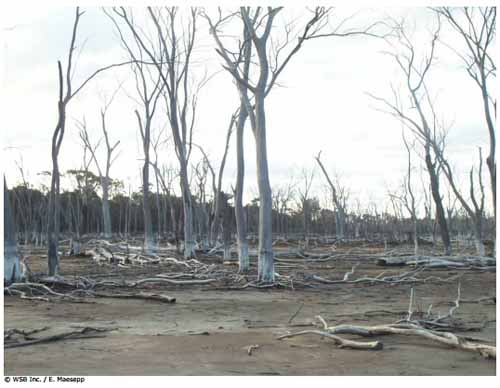

|
Historia de un desastre natural |
<<
Volver |

| Finalidad 5 Scouts trabajan por un mundo donde las personas están preparadas para responder a riesgos ambientales y desastres naturales. Objetivos educativos: Ser capaz de reconocer diferentes tipos de riesgos ambientales y desastres naturales y explicar por qué ocurren. Demostrar cómo prepararnos y reaccionar ante riesgos ambientales y desastres naturales en la comunidad. Explicar cómo cambios en el ambiente pueden influir en riesgos ambientales y desastres naturales. Edad: Clan Resumen: Una actividad divertida, basada en el drama, que explora cómo actuar ante un desastre natural. |
|
| Objetivo: Tomar conciencia de la
importancia de la preparación y toma de decisiones en una situación de
catástrofe. Materiales y equipo: Escenarios, papel y bolígrafos, película del Movimiento Scout 'Desastres Naturales: Estarás preparado?' (optativa) Preparación: Imprima los escenarios de desastre de la sección de recursos, o adáptelo de manera apropiada para su grupo. Duración: Sesenta minutos Lugar: Lugar de reunión Antecedentes: Los desastres naturales ocurren alrededor del mundo y pueden tener un efecto devastador en el ambiente y los seres humanos. Existen muchos tipos diferentes de desastres naturales, por ejemplo, huracanes, ciclones tropicales, tifones, tornados, sequías, inundaciones, erupciones volcánicas, deslizamientos, tsunamis, olas de calor, incendios forestales, plagas, hambrunas, epidemias, avalanchas y terremotos. Es muy importante que entendamos los desastres naturales. El efecto de un desastre natural puede minimizarse en ocasiones con una preparación cuidadosa, reconocimiento de las señales de peligro (si se presentan) y conocimiento de qué hacer una vez que el desastre ocurre. Necesitamos estar preparados para responder cuando esto nos ocurra a nosotros y apoyar cuando le ocurra a otras personas. |
|
| Guía paso a
paso de la actividad 1. Introduzca el tema de desastres naturales. Pida a los Scout nombrar diferentes tipos de desastres naturales y escriba sus respuestas en una hoja de papel grande. 2. Una película corta se encuentra disponible en el sitio Web del Movimiento Scout (www.scout.org) para dar una introducción de cómo varios desastres naturales afectan a Scouts alrededor del mundo, o tenga a mano información de desastres naturales recientes para compartir con los Scout. 3. Divida a los Scout en grupos y dele a cada grupo una tarjeta con un escenario de desastre natural. Utilice ejemplos adjuntos o escriba sus propios ejemplos utilizando tipos de desastres naturales que sean más relevantes para sus Scout. Asegúrese que los ejemplos utilizados muestren las diferentes escalas de tiempo asociadas con desastres naturales. La tarjeta pide al grupo que prepare una dramatización acerca de la situación descrita en su tarjeta. Pueden utilizar disfraces y artefactos si lo consideran apropiado. Deles aproximadamente veinte minutos para preparar su actuación. 4. Pida a cada grupo presentar su dramatización para el resto del grupo. Ejemplo de escenarios de desastres Escenario 1 - Larga sequía Instrucciones Lea la siguiente historia sobre cómo una larga sequía afecta a una familia. La historia no está completa. En ciertas partes de la historia hay una pregunta para ayudar a su grupo a pensar cómo decidir qué pasa después. Hagan una dramatización para contar la historia al resto del grupo. Historia Su familia vive felizmente en una granja en el campo cerca de un pequeño pueblo. Tienen ganado, una huerta y algunos campos de cultivo. Su abastecimiento de agua viene del tanque de reserva local y sus propios tanques de agua de lluvia. Su padre con regularidad se informa sobre el tiempo, mercados de ganado y la industria agrícola por medio de Internet y los periódicos. Una tarde, él pide la familia entera permanecer en la mesa después de la cena - "Me temo que tengo malas noticias" - dice él. Los informes meteorológicos advierten que afrontaremos una sequía este año. Esto podría ser noticias muy malas para nuestras cosechas y nuestro ganado. Tendremos que comenzar a pensar como vamos a enfrentarlo". Pregunta ¿Cuáles estrategias utilizará su familia para sobrevivir esta sequía? Llevan ya cinco meses de sequía. Solamente 40% de la cantidad usual de lluvia ha caído y los cultivos no han crecido por lo que los animales tienen poco alimento. Tienen dos opciones. Primeramente, comprar alimento para ellos. Esta no es la solución ideal ya que debido a la sequía hay poca cantidad disponible y muy cara. La segunda opción es vender parte de su ganado. Sin embargo, todos los demás están tratando de vender sus animales también, y el precio de la venta sería muy bajo. Las predicciones del clima dicen que esta sequía tardará un año más. La huerta de su mamá todavía está muy hermosa, pero su papá no se ve muy feliz estos días. ¿Qué harán tu y tu familia? Escenario 2 - Huracán aproximándose Instrucciones Lea la siguiente historia sobre cómo un huracán afecta a una familia. La historia no está completa. En ciertas partes de la historia hay una pregunta para ayudar a su grupo a pensar cómo decidir qué pasa después. Hagan una dramatización para contar la historia al resto del grupo. Historia Su familia vive en una casa en una colina con vista al océano, cerca del ecuador. Tienen su propia fuente de energía con ayuda de un generador eólico (viento) y paneles solares. Viven en un área afectada por huracanes y cuando la temporada de huracanes llega, saben cómo estar preparados. Su familia permanentemente tiene un equipo de emergencia listo y se mantienen informados sobre las condiciones del tiempo. Durante los últimos días, su familia ha estado escuchando informes en las noticias de la noche sobre un sistema de baja presión que ha convertido en un ciclón tropical y viaja por el océano y se dirige hacia ustedes. La última predicción es que golpeará la costa a la mañana siguiente.Todos están advertidos de mantenerse en alerta y prepararse inmediatamente para el daño de huracán. Esperan que el huracán produzca viento severo durante cerca de 12 horas. Pregunta: ¿Qué hace su familia para prepararse para el huracán? Son las 6:30 am del día en que se predijo el huracán. Los vientos comienzan a incrementar y la lluvia cae copiosamente. Hay nuevas advertencias sobre una oleada mayor. Los niveles del Océano podrían elevarse hasta 5 metros debido a la presión ascendente del sistema de ciclón. Pregunta: ¿Cambia esto de alguna manera los planes que hizo su familia? Son ahora las 7:30 pm. Los vientos eranterriblemente fuertes esta mañana y venían del este - pedazos de edificios y ramas de árboles volaban por todas partes, los árboles caían y seguía lloviendo. Justo después del almuerzo, el ojo de la tormenta pasó sobre ustedes ―estaba extrañamente tranquilo y el sol brillaba―. De repente ¡bam! Los vientos empezaron a aullar otra vez, esta vez del oeste y llovió más. Más materiales. volaban y la oleada empezó. Todo en un radio de 1 kilómetro de la costa se inundó ―había peces en las calles―. Los vientos comienzan a extinguirse, pero todavía llueve. Pregunta: ¿Qué tipo de daños sufrió su casa? Ha pasado una semana. El huracán pasó, no pero quedaron los daños a su barrio y el ambiente. Pregunta: ¿Cómo ayudaste después del huracán? Escenario 3 - Terremoto Instrucciones Lea la siguiente historia sobre cómo un terremoto afecta a una familia. La historia no está completa. En ciertas partes de la historia hay una pregunta para ayudar a su grupo a pensar cómo decidir qué pasa después. Hagan una dramatización para contar la historia al resto del grupo. Historia Es un fin de semana normal y su familia está cenando en su casa. Ustedes viven en una gran ciudad de una isla del Pacífico. De repente su gato empieza a comportarse de manera muy agitada y de un pronto a otro un suena retumbo y todo empieza a temblar violentamente. La televisión se apaga, las cosas empiezan a caerse de los estantes, una lámpara cae del cielorraso y su mamá grita “¡terremoto!” Pregunta: ¿Qué hace su familia? Deja de temblar. Su casa es un desastre, su mamá se quemó su brazo cuando el agua caliente de la estufa cayó sobre su piel, y todos están muy asustados, pero a pesar de todo están bien, incluyendo el gato. Sin embargo, usted sabe que podría haber réplicas. Pregunta: ¿Qué hacen ahora? Después de unos minutos la energía se va y se quedan a oscuras. Pueden oler gas en la cocina. Pregunta: ¿Qué hacen con el gas y estando a oscuras? |
|
| Evaluación 1. Reúna al grupo para discutir la actividad. Use las siguientes preguntas para ayudar a la discusión. ¿Cuáles fueron las diferencias principales en los diferentes escenarios de desastres naturales? ¿Cómo varió la preparación para cada desastre? ¿Se puede estar preparado para todos los desastres? ¿Cuán importante fue la toma de decisiones en cada escenario? ¿Cuánta presión hubo en la toma de decisiones en cada escenario? ¿Creen que así es como sucedería en la realidad? 2. Nota a los dirigentes: Los desastres naturales pueden ser experiencias devastadoras e impactar el ambiente, la infraestructura y a las personas aún mucho después del evento inicial. Es importante proveer apoyo constante a los jóvenes para apoyar su recuperación después de un desastre natural. Actividades avanzadas 1. Haga un equipo de preparación de emergencias con los Scout. Vea la actividad '¡Preparados para el desastre!' como ejemplo. 2. Tener conocimiento de primeros auxilios es muy importante cuando ocurre una situación de emergencia. Organice un curso de primeros auxilios para los Scout. 3. Visiten una oficina de servicios de emergencia local, por ejemplo, el Departamento de Bomberos o la Estación de Policía. ¿Cómo trabajan ellos durante situaciones de emergencia? ¿Alguna vez han dado respuesta a un desastre natural? © World
Scout Bureau Rue du Pré-Jérôme 5 PO Box 91 1211 Geneva 4 Plainpalais Switzerland Tel.: (+ 41 22) 705 10 10 Fax: (+ 41 22) 705 10 20 worldbureau@scout.org scout.org Reproduction is authorized to National Scout Organizations and Associations which are | |